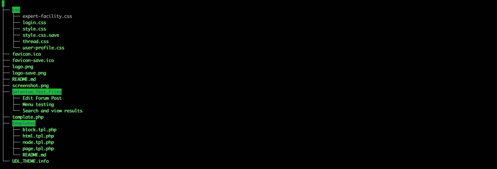

The problem here was to integrate the already existent analysis engine together with a fully-functional forum. Thus, our problem wasn’t terribly complex, and due to this, we aimed to be as aspirational as possible, with regards to using the newest and most functional technologies in order to develop our site, to give it a “premium” look-and-feel and functionalities.
Design Mockup
Initial Client Consultation
To begin with, we consulted our client - the Urban Dynamics Lab - for any advice or pointers on features they’d like the design to implement and include. They specified that they’d like a design similar to the Networks of Innovators (NoI) design - as it’s the main (though indirect!) competitor. We then began to sketch/wireframe our site. The main purpose behind these sketches/wireframes was to provide ourselves and our client with a clear, simple overview of the layout.
First Prototype and Showing the Client
Initially, before showing the client the first iteration of all our webpages, we decided to add more detail to the Homepage mockup, and then use this as a sample for our client, to avoid complexity. This was so they’d still obtain a clear picture of the overall design and would be able to provide us with effective feedback. This was so we could build on our initial designs, changing them appropriately for more visual appeal and to move us closer to finalising the design.
After showing our mockup to our client, they suggested multiple changes. These were mainly concerning the menu styling/location/size, the UDL banner across the top band of the mockup design, and the proposed style and placement of the login form and search bars respectively. We took this advice, and together with our own criticisms and suggested improvements for our work, we produced two more resultant prototypes.
Further Prototype Development
As a direct result of feedback from our clients, we developed two further mockups. Both of these are shown - and discussed, below.
Prototype #2 (ended up being the actual design)
This prototype involved us reshuffling the design, bearing in mind the advice of our clients, and making the following noticeable structure changes:
- Reduction of the menu bar to only take up half of upper part of the screen, replacing the blank space made to the upper right, with the search bar and login buttons occupying the newly-made space.
- Implementing the menu buttons down the left side of the forum, again as a single bar, rather, than across the top, taking up readability space. This way, the user can view more content at a time, and their view is less hindered.
- Implementing fewer menu buttons, bringing the total down from six to four, instead making Search and Log in separate (to the top right, as shown).
- Making the buttons more detailed in their design, to add to the overall user experience.
- Adding in a “Latest Forum Posts” area to the right of the page, displaying active and newly made threads by users. (get the image - will insert later)

Prototype #3
This prototype was developed as a stark alternative to Prototype #2, taking a radically different, more minimalistic approach to the UI design. It involved some very noticeable structure changes Complete change of location for the menu bar - the menu bar is now displayed down the side of the page, rather than across the top. This was a suggestion from our clients, who encouraged us to experiment and assess the outcome. Latest Forum Updates area is now located in the top left, with the Login and Signup buttons occupying the same area as Prototype #2 Search bar has moved downwards, to below the Latest Forum Updates. Most importantly, the Menu has been made into an expandable tab, saving a sizeable amount of space, but slowing down the process of finding the required page, particularly for first-time/new users. This was our own idea, we hadn’t yet approved it with our clients.
Consideration of Prototypes & Reaching a Decision
After designing all three prototypes as a team, we started to consider the advantages and disadvantages (from a UI perspective) of both. In addition, we consulted our client about all three designs, requesting them to assess which they felt was most suitable. After deliberation, Prototype #2 was chosen as our final design. The most pertinent factors contributing to this decision were:
- Menu - the menu isn’t too large (as with 6 buttons in Prototype #1) or too small (as with the expandable menu in Prototype #3), but rather medium-sized, which is more ergonomic for the user.
- Location of UDL Banner - the client agreed with us in our observation that the design should be close to that of Network of Innovators, it’s thereby more logical to locate the banner similarly, in the top left.
- Location of Search and Login forms - these are now located in the top right, mirroring the banner.
- Latest Forum Posts - this has been relocated to the right side of the page, and resized to occupy less space. (We ended up phasing this out, as discussed in the next section)
Slight Changes During Implementation Phase
As with any project, during the implementation phase we encountered a number of problems - both internally (mainly concerned with rapidly gaining proficiency in Drupal 8), and externally (mainly concerned with our regular progress checks with our clients - during which they would review our progress on the website and suggest changes - due to this, we ended up making a few further, slight changes during the implementation):
- Removal of Latest Forum Posts from every page, instead restricting this solely to the Forum Page
- Relocation and development of Login form - instead of having a Login button in the top right, this was made into a form conjoined to the left Menu area.
Implementation
Architecture Design
The entire system is currently relying on the Ubuntu 14.04 Server that has been provided by the UCL Computer Science department. This is a shared environment which serves other services related to the Urban Dynamics Lab (data management system, data analysis engine and background pipelines to support them). The team has created a custom LAPP (abbreviation from Linux, Apache, PostgreSQL and PHP) (https://www.turnkeylinux.org/lapp) stack that the team has generated in order to host the project. Due to the fact that this is a custom development server and as request by our client, the server is only reachable from within the UCL network (Eduroam) and the client will be able to open access from anywhere by asking the server administrator to change the firewall rules of the network that currently block all ports for traffic coming from outside of UCL.
An Apache HTTP server has been set up in order to orchestrate both the data management platform (CKAN) as well as the main platform that the team has developed. This orchestration server is used to map each service to different ports and help them communicate to the PostgreSQL instances that they both use to store data. In other words, Apache is holding together all the parts integrated in our custom LAPP stack as a sole VirtualHost, serving its content on Port 443.
The main functionalities of the website are based on the Drupal instance. Drupal is a web framework that uses PHP in order to serve content and render (from database), both custom functionalities, UI design and content. It servers both as the content management system, as well as administration service through the core functionalities. A Drupal module is a collection of files containing some functionality, written in PHP. Because the module code executes within the context of the site, it can use all the functions and access all variables and structures of Drupal core. In other words, they are used to customize and enhance the functionality of a clean instance in order to meet requirements. (https://www.drupal.org/docs/7/creating-custom-modules/understanding-the-hook-system-for-drupal-modules)
Operations
Due to the out-of-the-box design of Drupal, from the very beginning of the development period we have been able to generate a working version of the platform. Due to this, we have decided to adhere to an Agile project management strategy. This means that the first thing to fall in our pipeline was the deployment of the stack - because Drupal allows module development and content management with zero downtime. Due to this, we have been placed in the perfect position where we could have the same production environment mirroring the development one, boosting productivity, as well as time spent on testing.
When it comes to Networking, an Apache custom configuration has been written so that the service handles both CKAN (port 8080) and the main platform (port 443) in independent environments, while serving both of the continuously. This means that if ever the case of a faulty VirtualHost on either sides, will no specifically affect the other unless the problem is coming from the Apache instance as well (highly unlikely).

In terms of Version Control and Backup, we have have used both Git and a custom CRON job. A local git repository was set up at first in order to keep track of any newly added modules, customizations added to existing modules, as well as changes to the existing theme. As the project evolved and the work required rather dangerous work on the Apache configuration, we have decided to be more cautious with the existing codebase. This made the team take action as follows:
- Push the local repository to a remote GitHub one owned by the Urban Dynamics Lab team
- Create a CRON job running on the server to backup the database automatically into a text file and push it to a secure location on the server, outside the Apache scope. This has been achieved using a CLI tool called `drush` (http://www.drush.org/) specifically created to handle operations on Drupal instances. With this, we have been able to create our own BASH script that generates a text backup and placed it under `/etc/cron.daily/`to run every day at midnight in case the unexpected occurs. This `.sql` file can be easily restored back into the Drupal instance in case of storage loss using the same tool.
Module Customization
As previously mentioned, the core functionalities of Drupal have been extended using additional modules powered by the Drupal Community, which have been refurbished by us in order to fulfil the needs of the client. Among them, there were three modules that had the greatest impact on both the development process and the overall performance of the solution.
Profile module
The client has specifically required that an important feature of the solution has to be the capability of a user to mention the fields of his interest, allowing users to faster network with each other and prove their capabilities to answer different questions in the forum discussions. The team’s solution was to use the Profile2 module (https://www.drupal.org/project/profile2) and customize it in order to support additional fields to the user model.
This means that we have added not only the possibility to add new fields to the `users` table in the database, but through customization, we have also extended the power of the administrator so that, in any case required, the client can login as Power User and remove any unwanted users from the platform, without requiring the assistance of a developer.
Search module
As one of the most important requirements was to create a powerful search that would be able to generate results from both the `users` and `forum topics` tables of the database. As this could have not been achieved with the core Drupal Search module, we had to use the Search API module (https://www.drupal.org/project/search_api) that allowed us to query any column of the tables (in our case, topic titles, account names, account description and account tags) that were stored and return them in a single view.
**SCREENSHOT FROM SEARCH RESULTS PAGE**To be more precise, the module created is able to generate its own index in the background based on what the implementation asked it and query directly on that for fast return. This is making use of the Observer Pattern to make the custom search module “listen” / “track” any account profiles or forum topics being created or updated, triggering an update to the index with that new data.
Comment Module
The `comment` functionality is coming from a core Drupal module. Generally, customization of these modules is more of a hazard, above anything else. This is the main reason why the team has decided not to improve on the functionality of this, but actually to work on the template rendering of the file. As mentioned, the user profile has received an upgrade in terms of complexity. This ended up with our entire comments section being flooded with all the user tags, description and other account history for every comment they left. Even so, our template customization allowed us to not only filter the user attributes that got to be rendered in the forum topic view, but also to add custom classes to the UI elements, which would eventually allow us to style everything from the custom theme.
Theme Customization
The theme applied to the website is a custom one created by the team. We have used the Drupal Bootstrap theme (https://www.drupal.org/project/bootstrap) as a starting point and starting building our own from there. Beside the usual CSS styling done for each page, we have identified 4 types of UI elements that required a new build-up for their php template: blocks (such as the search block), nodes (the template used as homepage and Expert Facility), page (the high-level overall look of the website - top and left menu, as well as login box) and html (the scripts and styling files that get included in each page).
